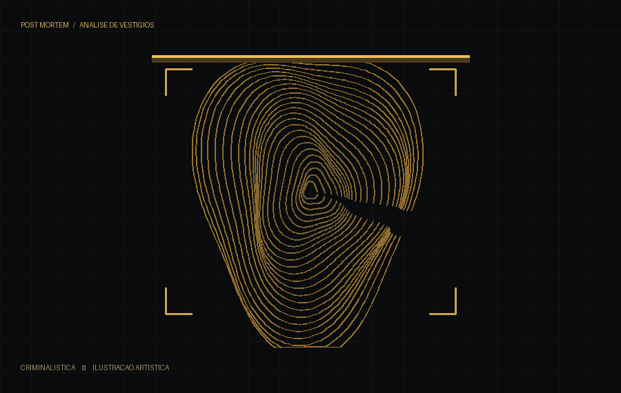

Formatos informados
PDFs interativos e baralhos Anki identificados em cada produto, com instruções de uso.
POST MORTEM / CARREIRAS POLICIAIS
Ciência e Direito na sua rotina de estudo. Explore guias interativos e flashcards para carreiras policiais. Em breve, personalize seu cronograma de estudos no próprio site.
Encontre seu material
FIG. 01 / VESTÍGIOSCRIMINALÍSTICA / PRINCÍPIO DE LOCARD
Princípio de troca de Edmond Locard · formulação tradicional
Na investigação, cada detalhe importa. Na preparação, também. Conheça materiais para transformar conteúdo em compreensão e revisão.
Conheça o princípio em fonte institucional ↗01 / ENCONTRE SEU MATERIAL
Responda a uma pergunta e veja uma sugestão de por onde começar. Você pode explorar todos os produtos quando quiser.
02 / CATÁLOGO
Materiais organizados por objetivo: comece, aprofunde ou revise conteúdos com mais método.
Preços à vista informados pela POST MORTEM. Parcelamentos, taxas e condições finais devem ser confirmados no checkout da Hotmart.
03 / PLANEJAMENTO PERSONALIZADO
Estamos preparando um gerador de cronogramas que organiza disciplinas e subtemas conforme a disponibilidade e a forma de estudar de cada aluno. Conheça o formulário e veja quais informações serão utilizadas.
Conhecer o geradorVersão de demonstração: ainda não realiza compras nem gera PDFs automaticamente.
04 / POST MORTEM
O Post Mortem reúne conteúdos de estudo voltados à preparação para carreiras policiais. Nossa identidade nasce do encontro entre ciência, investigação e conhecimento.
Ciência, método e verdade são os pilares que dão forma à marca e à maneira como apresentamos nossos materiais.
Acompanhe o Post Mortem no Instagram ↗05 / TRANSPARÊNCIA
Informações claras para você escolher o formato certo de estudo, antes de comprar.
PDFs interativos e baralhos Anki identificados em cada produto, com instruções de uso.
Guias com navegação e, conforme o material, links para legislação e fontes oficiais.
Preços à vista no catálogo; condições finais e parcelamentos conferidos na Hotmart.
Sobre certificações: os produtos apresentados são materiais de estudo, não cursos certificados. Não exibimos certificações, aprovações ou endossos institucionais que não tenham sido comprovados.
DÚVIDAS FREQUENTES
Não há certificado de conclusão anunciado para os e-books e flashcards deste catálogo. São materiais digitais de apoio aos estudos, e não cursos de formação certificados.
O botão “Comprar na Hotmart” abre o checkout do produto. Consulte valores e condições antes de concluir a compra. Você pode explorar os detalhes no site antes de ir ao checkout.
O catálogo reúne guias interativos e duas coleções de flashcards de Direito Penal. Os formatos e os materiais incluídos variam por produto; confira cada descrição e as condições na Hotmart.
A coleção inclui um arquivo APKG para importação no Anki e um guia de utilização. Consulte as instruções do material para começar. A disponibilidade e eventuais custos dos aplicativos dependem da plataforma utilizada.
Use “Conhecer o conteúdo” para ver a apresentação e as artes de cada produto. Essas prévias são imagens de divulgação; os e-books completos não estão disponíveis para leitura neste site.
Ainda não. A página de cronogramas apresenta uma demonstração do formulário. A geração automática de PDFs e a liberação após pagamento serão habilitadas após a integração segura com o serviço de IA e o checkout.
Não. A compra ocorre na página de pagamento do produto. O Hotmart Club é a área de acesso aos materiais quando essa modalidade estiver configurada para a compra realizada.
Acompanhe o Instagram @post_morrtem para conhecer as publicações do Post Mortem.
CONTINUE SUA PREPARAÇÃO